# A tibble: 1,000 × 4
anim_id age treat death_obs
<int> <dbl> <chr> <dbl>
1 1 5.5 A 0
2 2 8.4 B 0
3 3 8.9 A 1
4 4 8.5 B 1
5 5 7.2 B 0
6 6 9.8 B 1
7 7 7.2 A 0
8 8 9.9 B 1
9 9 7.3 B 0
10 10 9.7 B 0
# ℹ 990 more rowsIntroduction to causality in epidemiology
Aurélien Madouasse
Oniris VetAgroBio
2023-11-08
Teaching material
Link to the slides: https://aurmad.github.io/intro_causality_manimal/
Link to the code and data: https://github.com/AurMad/intro_causality_manimal
Why causality ?
… through an example
Bovid-19
- Bovid-19 is a (fictitious) viral disease of cows that very often results in death
- Two treatments are used to prevent death
- The effectiveness of these treatments is unknown
- The following dataset was collected from 1000 cows treated with either one or the other treatment
Effectiveness of treatments A and B
- From the data collected we would like to evaluate the effectiveness of each treatment
Exercise
- Open the file called
bovid19_1.xlsxin thedatafolder - Calculate the proportion of deaths for each treatment
- Which treatment is the most effective?
Effectiveness of treatments A and B
- You should have obtained the following table:
| Treatment | N Treated | N deaths | P deaths |
|---|---|---|---|
| A | 370 | 145 | 0.392 |
| B | 630 | 266 | 0.422 |
- What do you conclude?
Effectiveness of treatments according to age
- We suspect that the effectiveness of treatments may vary with age
- We repeat our calculation, taking into account the age of the cows
Exercise
- In the
bovid19_1.xlsxfile - Categorise each animal as being \(< 5\) or \(\geq 5\) years of age
- Calculate the proportion of deaths for each treatment in each age category
- Which treatment is the most effective?
Effectiveness of treatments according to age
- You should have obtained the following table:
| Treatment | Age | N Treated | N deaths | P deaths |
|---|---|---|---|---|
| A | < 5 | 93 | 4 | 0.043 |
| B | < 5 | 26 | 0 | 0.000 |
| A | > 5 | 277 | 141 | 0.509 |
| B | > 5 | 604 | 266 | 0.440 |
- What do you conclude?
Simpson’s paradox
Overall, the proportion of deaths is lower for treatment A
In both age groups, the proportions of deaths are lower for treatment B
This is known as Simpson’s paradox
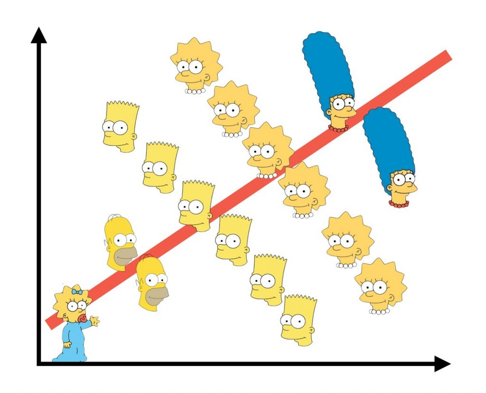
- Left: example with 2 continuous variables \(\rightarrow\) the direction of the association is reversed when you control for the character
Why causality ?
- In order to improve health of individuals, and ultimately of populations, our objectives are to:
- implement preventive measures, which involves identifying the causes leading to disease
- provide effective curative treatments, which implies to quantify their causal impact on the course of disease
- Studying associations can be misleading!
- We need specific concepts and tools to study causality.
Early attempts in medicine & epidemiology
Koch postulates (1)
- With the discovery of bacteria at the end of the XIX\(^{th}\) century, the question arose as to whether a given bacterium was the cause of a given disease.
- Robert Koch and Friedrich Loeffler proposed a set of 4 postulates that had to be fulfilled by a bacterium in order to conclude that it is causing a disease.
Koch postulates (2)
- The Koch postulates (from this Wikipedia page) are:
- The microorganism must be found in abundance in all organisms suffering from the disease but should not be found in healthy organisms.
- The microorganism must be isolated from a diseased organism and grown in pure culture.
- The cultured microorganism should cause disease when introduced into a healthy organism.
- The microorganism must be re-isolated from the inoculated, diseased experimental host and identified as being identical to the original specific causative agent.
- These postulates had limitations (asymptomatic carriers, organisms difficult to grow…) and only applied to infectious agents
Bradford Hill criteria (1)
- In the first half of the XX\(^{th}\) century, questions arose regarding the causes of the increase in the incidence of lung cancer
- In the 1950s, epidemiologists Austin Bradford Hill and Richard Doll ran a series of studies to identify the causes of this increase
- They found a strong association between smoking habits and the probability of developing cancer
- The interpretation of their results that smoking causes cancer was challenged.
- In 1965, Bradford Hill proposed a set of 9 criteria to assess causal claims
Bradford Hill criteria (2)
The 9 criteria (from Wikipedia):
- Strength (effect size): A small association does not mean that there is not a causal effect, though the larger the association, the more likely that it is causal.
- Consistency (reproducibility): Consistent findings observed by different persons in different places with different samples strengthens the likelihood of an effect.
- Specificity: Causation is likely if there is a very specific population at a specific site and disease with no other likely explanation. The more specific an association between a factor and an effect is, the bigger the probability of a causal relationship.
- Temporality: The effect has to occur after the cause (and if there is an expected delay between the cause and expected effect, then the effect must occur after that delay).
Bradford Hill criteria (3)
The 9 criteria (from Wikipedia):
- Biological gradient (dose–response relationship): Greater exposure should generally lead to greater incidence of the effect. However, in some cases, the mere presence of the factor can trigger the effect. In other cases, an inverse proportion is observed: greater exposure leads to lower incidence.
- Plausibility: A plausible mechanism between cause and effect is helpful (but Hill noted that knowledge of the mechanism is limited by current knowledge).
- Coherence: Coherence between epidemiological and laboratory findings increases the likelihood of an effect. However, Hill noted that “lack of such evidence cannot nullify the epidemiological effect on associations”.
- Experiment: “Occasionally it is possible to appeal to experimental evidence”.
- Analogy: The use of analogies or similarities between the observed association and any other associations.
Current concepts and approaches
Problem and notation
- Assume a disease and a treatment \(A\). We write:
- \(A = 0\) for individuals who did not receive the treatment
- \(A = 1\) for individuals who received the treatment
- After receiving the treatment, two things can happen:
- \(Y = 0\) for individuals who survive
- \(Y = 1\) for individuals who die
- What would it mean to say that treatment \(A\) has a causal effect on preventing death in individual \(i\)?
Individual treatment effect
- We define for individual \(i\) :
- \(Y_i^{A = 1}\) the outcome of receiving treatment \(A\)
- \(Y_i^{A = 0}\) the outcome of NOT receiving treatment \(A\)
- If treatment \(A\) has a causal effect on the outcome of interest, then :
\[Y_i^{A=1} \neq Y_i^{A=0}\]
The difference \(Y_i^{A=1} - Y_i^{A=0}\) is a measure of the individual treatment effect
The fundamental problem of causal inference is that only one of the potential outcomes can be observed \(\rightarrow\) it is impossible to estimate \(Y_i^{A=1} - Y_i^{A=0}\)
Individual treatment effect
- In the dataset below, we assume that we have observed the outcomes under both treatments
# A tibble: 6 × 6
anim_id age treat death_if_A death_if_B death_obs
<int> <dbl> <chr> <int> <int> <dbl>
1 1 5.5 A 0 0 0
2 2 8.4 B 1 0 0
3 3 8.9 A 1 1 1
4 4 8.5 B 1 1 1
5 5 7.2 B 1 0 0
6 6 9.8 B 1 1 1Exercise
- Open the file called
bovid19_2.xlsxin thedatafolder - Calculate the individual treatment effect for each animal
- Calculate the mean of the individual treatment effects
- What do you conclude?
- In a real situation, what data could you have?
- How would it change your conclusions?
Potential outcome framework
- The framework we use to conceptualise causality is called the potential outcome framework :
- There is one potential outcome for each treatment modality
- Only one of these treatment modalities can be observed in a given individual
- This leads to the fundamental problem of causal inference : it is impossible to quantify the treatment effect in an individual
| \(i\) | Treatment | \(Y^{a=0}\) | \(Y^{a=1}\) |
|---|---|---|---|
| 1 | A = 0 | 0 | ? |
| 2 | A = 1 | ? | 0 |
| 3 | A = 0 | 1 | ? |
| 4 | A = 1 | ? | 1 |
| 5 | A = 1 | ? | 0 |
Average treatment effect: definition
If we can’t quantify the treatment effect in a single individual, maybe we can do it for a group of individuals
The Average Treatment Effect is defined as:
\[ATE = E[Y_i^{A=1} - Y_i^{A=0}]\]
where \(E[.]\) is an expectation (i.e. an average) in the group of interest.
We assume that:
\[ATE = E[Y_i^{A=1} - Y_i^{A=0}] = E[Y_i^{A=1}] - E[Y_i^{A=0}]\]
Factual and counterfactual outcomes
- In the data we have:
\(Y_i|A_i=0\): the value of \(Y\) in individuals who did not receive the treatment
\(Y_i|A_i=1\): the value of \(Y\) in individuals who received the treatment
- In probability notation \(A|B\) reads \(A\) given \(B\)
- Factual outcome:
- \(Y^{A=0}_i|A_i=0\) and \(Y^{A=1}_i|A_i=1\) are factual outcomes \(\rightarrow\) the potential outcome was the one observed
- Counterfactual outcome:
- \(Y^{A=1}_i|A_i=0\) and \(Y^{A=0}_i|A_i=1\) are counterfactual outcomes \(\rightarrow\) the potential outcome was not the one observed
Estimating an average treatment effect
- We could estimate the ATE by calculating :
\[E[Y|A=1] - E[Y|A=0]\]
where the symbol \(|\) means given that
the equation reads as follows: the expectation of \(Y\) given that (\(|\)) the animals received the treatment (\(A=1)\) minus the expectation of \(Y\) given that the animals did NOT receive the treatment (\(A=0)\)
this can be calculated by subtracting the proportion of individuals that survived in the untreated from the proportion of individuals that survived in the treated
Estimating an average treatment effect
Exercise
- In the file
bovid19_2.xlsx - Calculate \(E[Y|A=1] - E[Y|A=0]\)
- Compare what you obtain to the average of individual treatment effects calculated earlier
- Are the results different?
- Why?
Representing causality with DAGs
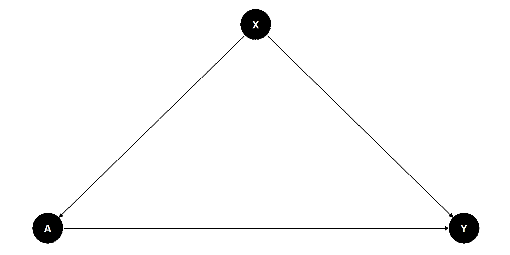Representing causality with DAGs
- On the right is a representation of the causal relationships between age (\(X\)), treatment (\(A\)) and death (\(Y\))
- This type of representation is called a Directed Acyclic Graph (DAG)
- Each variable (\(X\), \(A\), \(Y\)) is called a node
- Nodes can be connected with edges
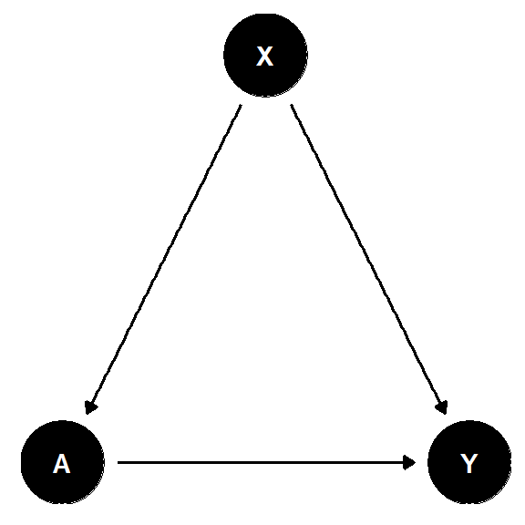
- The edges have a direction (directed)
- Following directed edges, no path connects a node to itself (acyclic)
- DAGs can be used to represent causality: causal graphs
Causality in DAGs
- In a causal DAG, causality is represented by a directed edge
- X causes Y
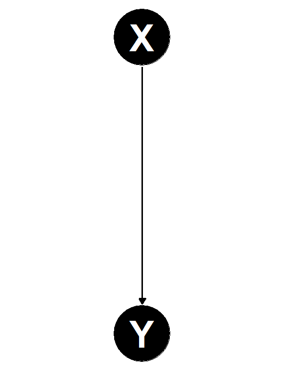
DAGs’ building blocks
- DAGs are made of 3 types of basic building blocks
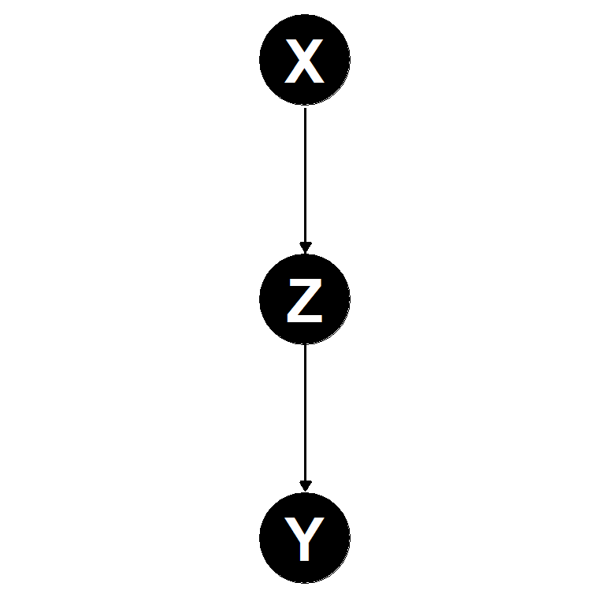
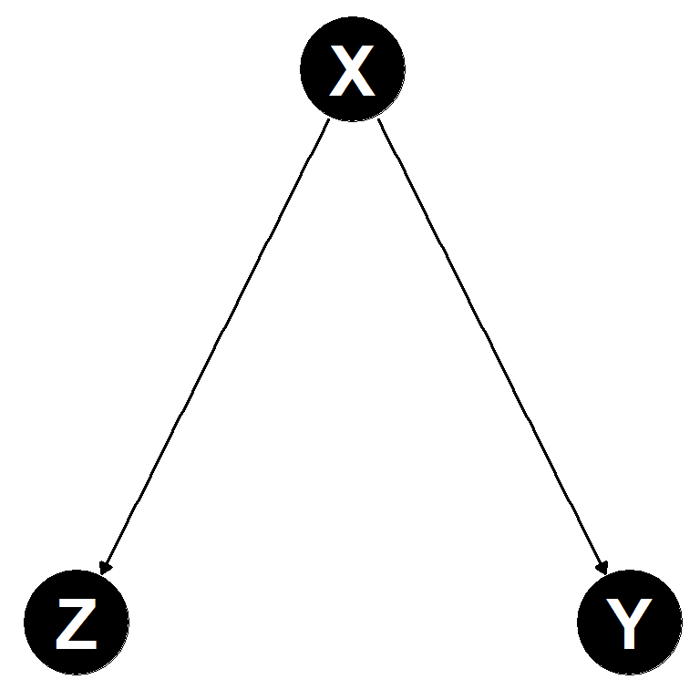
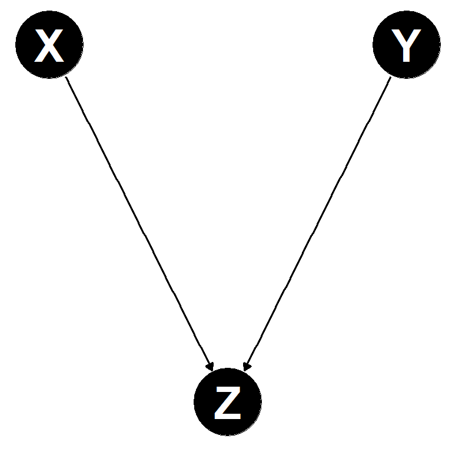
- These structures are important to identify for study design and causal inference
Confounders

Back to Bovid-19
- In epidemiological terms
- \(Y\) (death) is the outcome of interest
- \(A\) (treatment) is the exposure of interest
- \(X\) (age) is a confounder \(\rightarrow\) \(X\) has a causal effect on both the outcome and the exposure.
- In other words, age is a confounder because it is both a prognostic factor and is used to determine treatment allocation.

- In causal language:
- \(E(Y_i^{A=1}|A_i=0) \neq E(Y_i^{A=1}|A_i=1)\) and
- \(E(Y_i^{A=0}|A_i=0) \neq E(Y_i^{A=0}|A_i=1)\)
Exchangeability
If we want to be able to make valid causal inference, we need to ensure that:
- \(E(Y_i^{A=1}|A_i=0) = E(Y_i^{A=1}|A_i=1)\) and
- \(E(Y_i^{A=0}|A_i=0) = E(Y_i^{A=0}|A_i=1)\)
This can also be phrased as: treatment allocation needs to be conditionally independent of the outcome
- \(Y_i^{A} \perp\!\!\!\perp A_i\)
This is called exchangeability
Can you propose a strategy for obtaining exchangeability?
Randomisation

Randomised experiments
- Randomisation is the best way to make data exchangeable
- Principle: use chance to allocate the different treatments being compared (including placebo)
- This leads to \(A_i \perp\!\!\!\perp X_i\) and therefore \(Y_i^{A} \perp\!\!\!\perp A_i\)
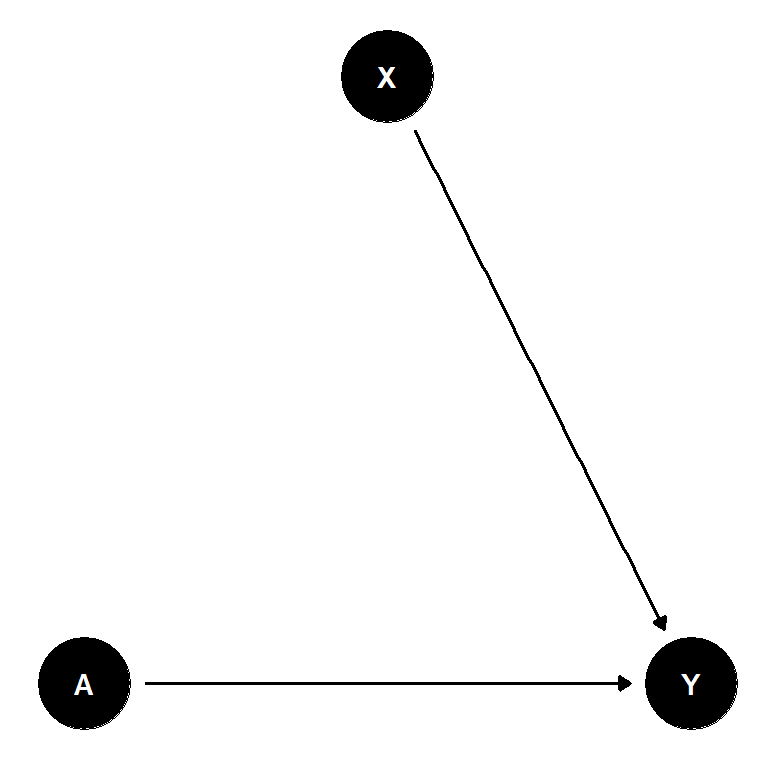
- This is the basis for randomised controlled trials used to evaluate treatment efficacy
Randomised experiments - exercise
Exercise
- In the file
bovid19_2.xlsx - Propose/try an approach to randomly allocate treatment
- From the randomly allocated treatments, calculate an ATE
- Is your estimation better than the one obtained from the observed data?
Observational studies

Observational studies: motivation, definition and challenges.
- It is not always possible to conduct randomised experiments
- e.g. not ethical to randomly allocate people to smoking/non smoking
- Non experimental data used to make causal inference
- e.g. Bovid-19 data
- Observational study: study in which the exposure(s) is not determined by the researchers
- Causal inference from observational data is hard and carries potential sources of bias
- Methods have been developed to mitigate the risk of bias in such studies
- Most methods rely on the prior construction of DAGs from the scientific literature or expert opinion
Matching to address confounding
- Aim: make exposure (treatment) conditionally independent from outcome \(\rightarrow Y_i^{A=a} \perp\!\!\!\perp A_i | X_i\)
- Principle:
- match every treated individual with an untreated individual with the same characteristics
- model/compare the expected values of the outcome in treated and untreated of the matched sample
Inverse probability weighting (IPW) to address confounding
- Aim: make exposure (treatment) conditionally independent from outcome \(\rightarrow Y_i^{A=a} \perp\!\!\!\perp A_i | X_i\)
- Principle:
- weight each observation by the inverse of its probability of exposure (treatment)
- model/compare the expected value of the outcome using the weighted observations
Propensity scores for matching and IPW
- Propensity scores are individual probabilities of exposure (treatment) predicted from models
- Consider the following DAG:
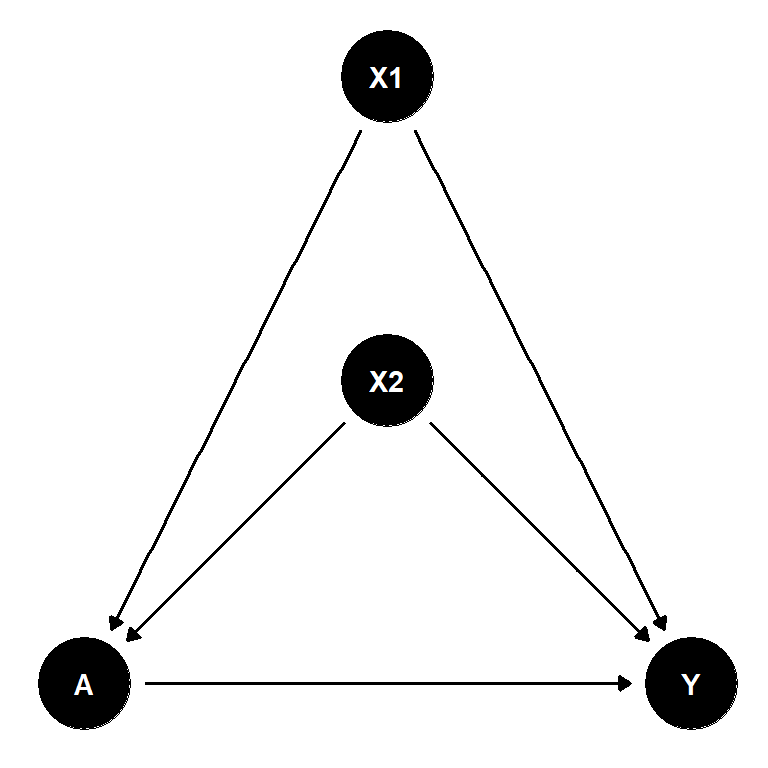
- We can use logistic regression to model the probability of treatment:
- \(ln(\frac{p(A_i)}{1 - p(A_i)}) = \beta_0 + \beta_1 X1_i + \beta_2 X2_i\)
- then \(p(A_i)\) can be predicted for each \(i\) from the observed \(X1_i\) and \(X2_i\)
- Models other than logistic regression can also be used
Mediation analysis (1)
- Consider the following DAG:
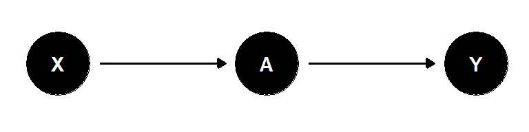
- If we are interested in the causal effect of \(A\) on \(Y\), we do not have to care about \(X\)
- The path from \(X\) to \(Y\) is blocked by \(A\)
Mediation analysis (2)
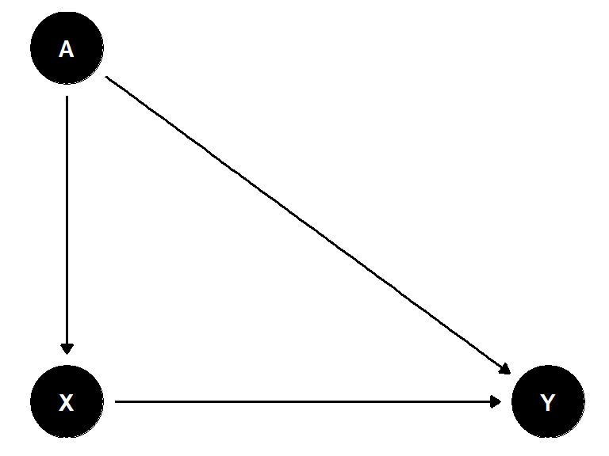
- Consider the DAG on the left
- If we are interested in the causal effect of \(A\) on \(Y\), we can:
- Look at the total effect of \(A\) on \(Y\) by modelling \(Y\) as a function of \(A\) only
- Break down the effect of \(A\) on \(Y\) into a direct effect and an effect of \(A\) mediated through \(X\)
- This is called mediation analysis
Collider bias
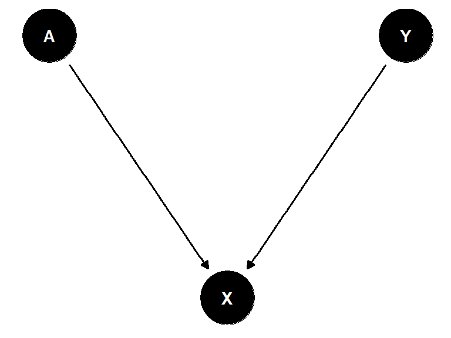
- Consider the DAG on the left
- If we are interested in the causal effect of \(A\) on \(Y\), we should not include \(X\) in our analysis
- \(X\) is a collider
- Including a collider in an analysis will result in a spurious correlation between \(A\) and \(Y\)
Dagitty
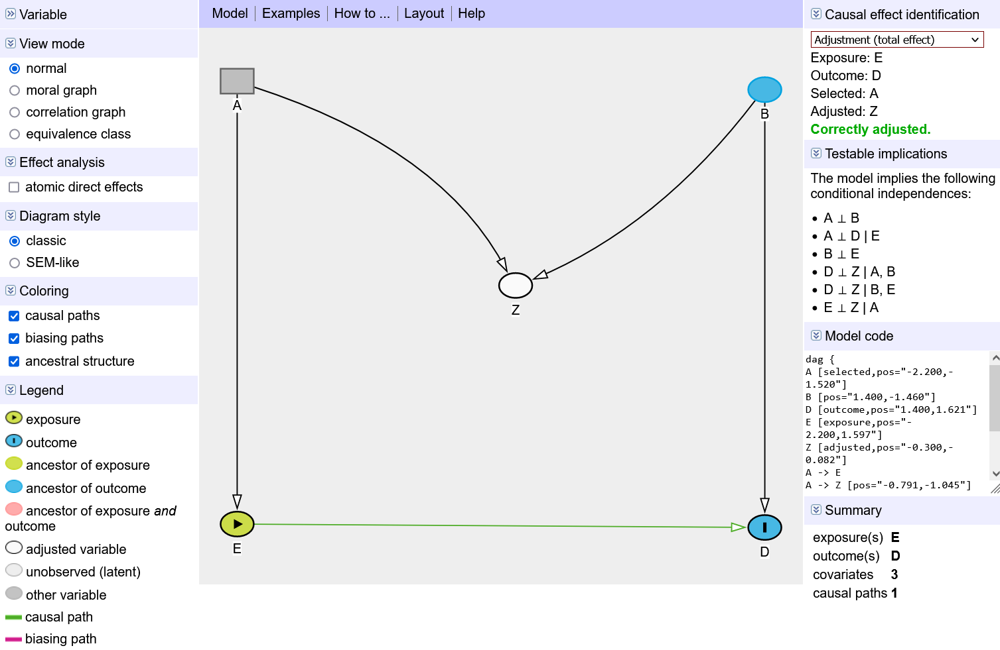Dagitty
- Dagitty is a tool for creating, editing, and analyzing causal diagrams
- Available as a website (https://www.dagitty.net/) and an R package
Exercise
- Use the Dagitty website to create a DAG for a phenomenon of your choice
- What data should you collect?
- How would you analyse your data?
Take home messages
- Identifying causal relationships from observational data is hard
- This requires the formulation of hypotheses based on scientific literature or expert opinion.
- These hypotheses should be structured into a DAG
- The DAG should guide data collection and analysis
- A limited number of rules exist to identify the variables (not) to include in the analysis and how to interpret the results